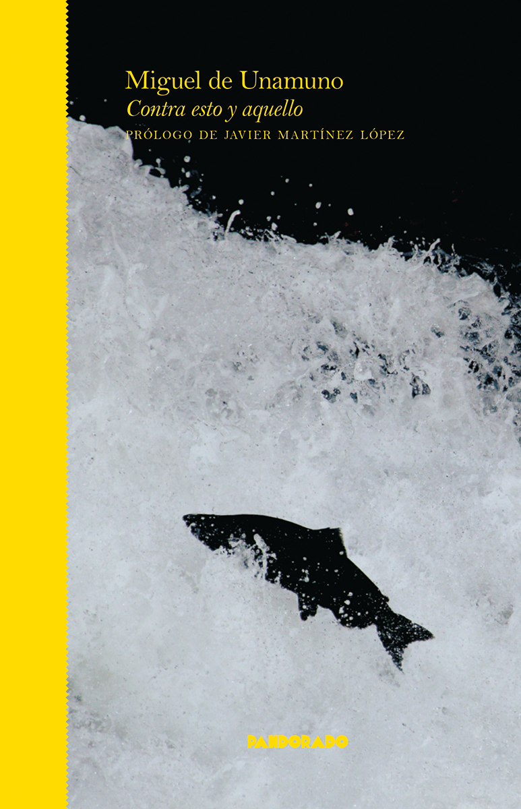

14:16 · 1 OPERA
Cosa sta succedendo? La costruzione dell'attualità a colpi di martello.
Il filo del discorso
La domanda «cosa sta succedendo?» introduce una riflessione sul divario fra eventi, informazione e capacità di comprenderli. Dr Divago usa esempi di cronaca per criticare la costruzione dell’attualità e la fragilità della memoria dell’ascoltatore. La seconda parte propone la nozione di comunità secondarie, attribuita ad Adorno, per leggere rapporti mediati da scambi e strutture impersonali. Il discorso si chiude sulla distanza fra stimoli, esperienza e senso di sé, che il relatore interpreta come una conseguenza della società amministrata.
I libri nel discorso

Contra esto y aquello
Note sul riferimento
Copertina: Pandorado · Pandorado Ensayo · edizione in spagnolo
Copertina autentica dell’edizione di riferimento, non attribuita all’esemplare del video.
Il nome di Unamuno e la formula spagnola contro questo e quello rendono probabile l’allusione al titolo.